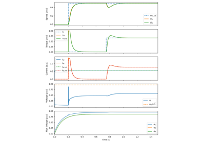
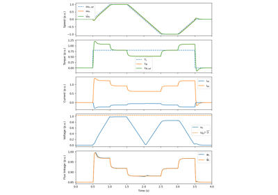
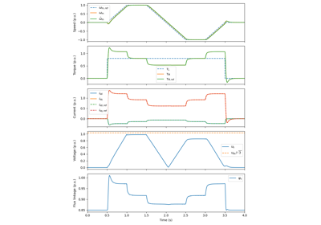
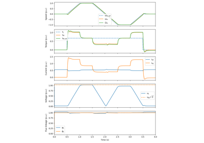
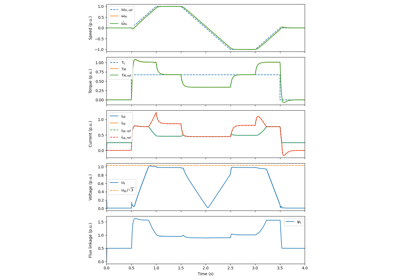

Examples
A collection of Python scripts that demonstrate how to use motulator.
Induction Motor Drives
V/Hz-Controlled 2.2-kW Induction Motor Drive
V/Hz-Controlled 2.2-kW Induction Motor Drive

Vector-Controlled 2.2-kW Induction Motor Drive
Vector-Controlled 2.2-kW Induction Motor Drive
Synchronous Motor Drives

Flux-Vector Controlled 2.2-kW PMSM Drive
Flux-Vector Controlled 2.2-kW PMSM Drive

Vector-Controlled 2.2-kW PMSM Drive
Vector-Controlled 2.2-kW PMSM Drive

Flux-Vector-Controlled 6.7-kW SyRM Drive
Flux-Vector-Controlled 6.7-kW SyRM Drive

Vector-Controlled 6.7-kW SyRM Drive
Vector-Controlled 6.7-kW SyRM Drive